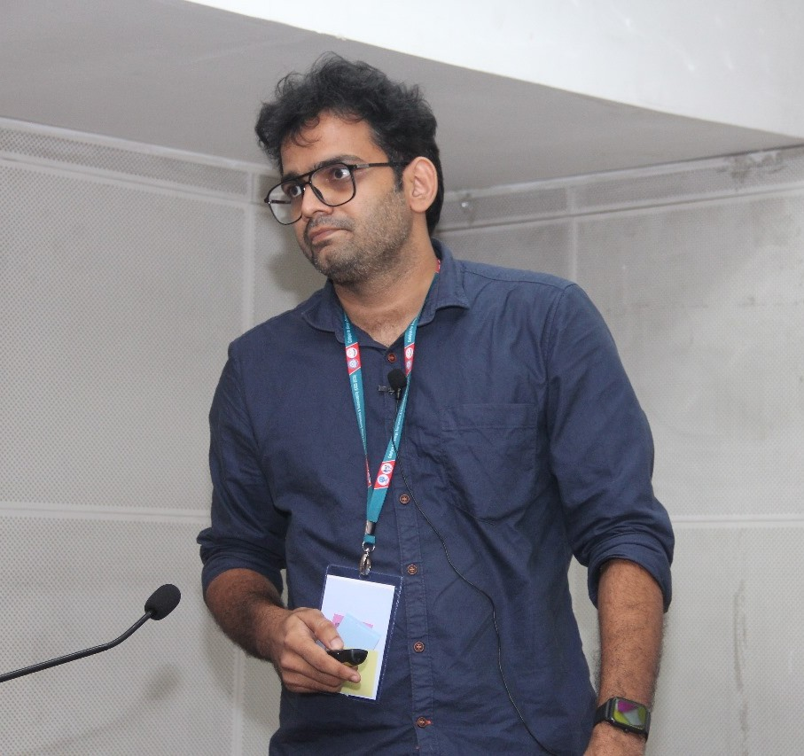
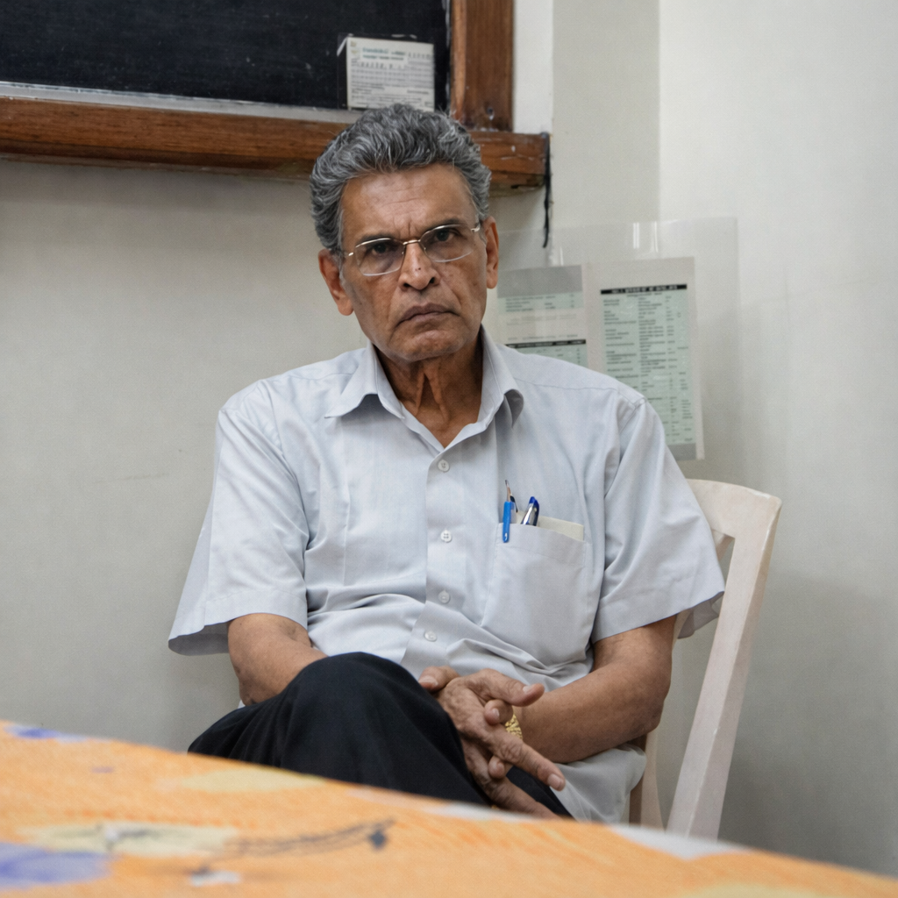

Human history is a sequence of technological shifts. We have moved from basic fire to complex digital networks. Click to examine this progression and its hidden vulnerabilities.
Early hominids gained a survival advantage through tools. Controlling fire and carving stone allowed early societies to manipulate their environment. This period established the physical basis for all future engineering.
The Industrial Revolution marked a rapid increase in energy consumption. Steam engines, electrical grids, and chemical manufacturing multiplied our physical capabilities. This era created systems that required complex maintenance.
Scientific methods allowed us to observe the invisible world. Researchers mapped DNA and defined the rules of quantum mechanics. We decoded the basic structures of life and the physical universe.
The invention of the transistor shifted our focus to computation. Global networks now connect billions of devices. Modern society generates more information in one day than previous generations did in centuries.
However, digital storage is highly unstable. Hardware degrades over time, and file formats quickly become outdated.
Every major discovery from stone tools to genetic mapping faces the risk of permanent loss. Systematic digitization and aggressive archiving are not optional tasks.
Academic research produces valuable knowledge through publications, conferences, institutional reports, and educational programs. Yet much of this knowledge remains difficult to access, navigate, or preserve.
These are not just design problems. They are communication gaps that affect how scientific knowledge is shared, understood, and preserved across academic communities. Academic Digital Services focuses on closing these gaps through structured, research-informed communication.
Most design and web development services approach academic projects as purely technical tasks. They can produce clean layouts and attractive visuals, but they often miss the intellectual structure of the work itself.
This platform approaches every project from the perspective of a researcher who understands scientific terminology, academic publishing practices, conference structures, and institutional expectations.
This means that communication materials do not just look professional. They reflect the logic and structure of the research they represent.
The services offered through this platform are intended for organizations and communities that need scientific and institutional knowledge presented with accuracy, clarity, and professional quality. The platform works with clients in India and internationally.
Services are organized around five areas that cover the most common communication needs of academic and research communities. Projects can range from a single poster or brochure to complete communication infrastructure for a conference or research initiative.
All services are modular and can be combined based on the scope and resources of each project.
Websites for research groups, laboratories, academic projects, and conferences. These platforms are designed to present research outputs and institutional identity in a structured and accessible way.
Where appropriate, event websites can be built to function as permanent digital knowledge archives that remain useful long after the event has concluded.
Professional structuring and design of academic and institutional documents. The focus is on improving readability, navigation, and visual quality while maintaining the integrity of the content. This includes publication-grade LaTeX typesetting for theses, proceedings, and technical manuscripts.
All report content is provided by the client institution or research group. This service covers document design, typesetting, and communication structure only.
Communication support for conferences, workshops, orientation programs, lecture series, and training events. This includes event branding, website development, abstract books, and participant materials.
A key principle is that academic events should produce lasting knowledge resources. Conference platforms are therefore designed as permanent digital archives that preserve speaker information, abstracts, session outcomes, and post-event publications.
Materials that translate complex scientific research into formats accessible to wider audiences. This includes explainer articles, illustrated guides, educational modules, policy briefs, outreach materials, and research infographics.
Educational materials follow a foundational-first approach. Conceptual frameworks are introduced before advanced topics, helping readers build understanding step by step.
Visual materials that support academic outreach, institutional identity, and research presentation. These are designed to communicate scientific information with clarity and professional quality, whether for digital or print use.
Websites and print materials designed for academic and research contexts, built with domain knowledge, not templates.
Conceptualised, written, illustrated, and laid out an educational graphic booklet on marine litter for the School of Sustainability, IIT Madras. The booklet communicates the environmental impact of marine litter and responsible waste management through a visual narrative format, designed for outreach to students, educators, and the general public. All work (concept development, narrative structuring, graphic illustration, and layout composition) was carried out independently.
View Booklet ↗Full conference website for the 20th edition of India's flagship catalysis orientation programme, hosted by the CO2 Research and Green Technologies Centre, VIT Vellore. Designed with the intellectual character of catalysis education, including a foundational structure, clear participant information, registration workflow, and brochure.
View Live Site ↗Designed the official programme brochure for the Orientation Programme in Catalysis. Covers programme overview, schedule, resource persons, eligibility, and logistical information. Produced for both print distribution and digital download, integrated directly into the conference website.
View Brochure PDF ↗Academic research portfolio for a postdoctoral fellow at Aix-Marseille University, France. Domain-informed visual identity drawn from synthetic organic chemistry and asymmetric catalysis. Full research narrative including publications, patents, academic journey, conferences, and scientific philosophy. Built on GitHub Pages with synthesised molecule SVG visuals.
View Live Site ↗Founded and managed the Catalysis Education Newsletter, an alumni-driven, open-access platform preserving the National Centre for Catalysis Research (NCCR), IIT Madras legacy. Responsible for end-to-end newsletter production, including issue design on Substack, content curation and strategy, editorial coordination with Prof. B. Viswanathan, and subscriber communication. Serves researchers, PhD students, and catalysis educators worldwide.
Read the Newsletter ↗Every project begins with a conversation about your research context and communication goals. From there, a clear plan is developed and executed.
We talk about your research context, your audience, and what you need communicated. This shapes the scope and direction of the project.
Communication materials are structured and designed with domain understanding, ensuring the output reflects the logic of your research.
Final outputs are delivered with all source files. You own everything. Backups are maintained on our end for emergencies.
Academic integrity is central to everything this platform does. The boundaries of service are clearly defined to protect both the credibility of the platform and the standards of the academic community.
All scientific content must be provided by the client. The platform's role is limited to design, structure, and communication.

Dr. Hariprasad Narayanan is a researcher and scientific communicator whose work focuses on CO2 activation, sustainable fuel synthesis, and industrial decarbonisation. In parallel with his research activities, he provides academic digital services for researchers, laboratories, and institutions, helping translate complex scientific work into clear, well-structured digital platforms and knowledge resources.
This platform brings together his experience in scientific research, academic publishing, digital platform development, and structured knowledge documentation. Its aim is to help research communities bridge the gap between the quality of their scientific work and the quality of its presentation and communication.
Dr. Narayanan previously worked as a Research Associate at the National Centre for Catalysis Research, IIT Madras, where he collaborated with Prof. B. Viswanathan on research related to industrial decarbonisation, including the development of CO2-to-sustainable aviation fuel pathways using reverse water–gas shift and Fischer–Tropsch synthesis.
He completed his PhD in Environmental Studies from Cochin University of Science and Technology, conducting doctoral research at the National Centre for Catalysis Research, IIT Madras under the guidance of Prof. B. Viswanathan. His doctoral work focused on the activation of carbon dioxide and its reduction to value-added chemicals and fuels on graphitic carbon nitride surfaces.

Honorary Professor, Department of Chemistry, IIT Madras
Former Head of the Department of Chemistry, Materials Science Research Centre, and the National Centre for Catalysis Research at Indian Institute of Technology Madras. He is one of India's most respected figures in catalysis research, with seven decades of contributions to heterogeneous catalysis, energy materials, and scientific education. He has also served as a member of several scientific committees appointed by the Government of India, including those under the Department of Science and Technology (India) and the Ministry of New and Renewable Energy.
"Academic Digital Services developed my research portfolio website with great attention to detail. My requirements were carefully understood and translated into a clear, structured, and professional online profile. The website presents my research work effectively, and I am very pleased with the final outcome."
"Academic Digital Services assisted us in preparing the brochure and website for the 20th Orientation Programme at VIT. The programme details were translated into a clear and well-organized format suitable for academic communication. The materials were thoughtfully designed and helped present the programme information effectively to participants and invited speakers. I appreciate the care and effort put into the work."
"Academic Digital Services prepared a graphic educational booklet on marine litter for the School of Sustainability at Indian Institute of Technology Madras. The booklet presents the issue in a clear and visually engaging format that can effectively reach students and the wider public. The concept development, narrative structure, illustrations, and layout were all independently handled, bringing together scientific clarity with thoughtful design. The final booklet communicates the environmental message in a simple and impactful way."
Projects typically begin with a discussion about your research context, communication goals, and specific requirements. Research groups, institutions, and conference organizers are welcome to reach out.
Projects vary widely in scope, from designing a single communication material to developing complete communication systems for academic events or research initiatives. For this reason, project costs are determined after an initial discussion of the requirements and objectives.